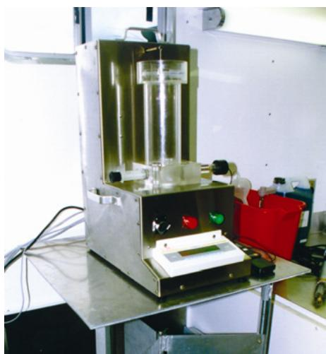
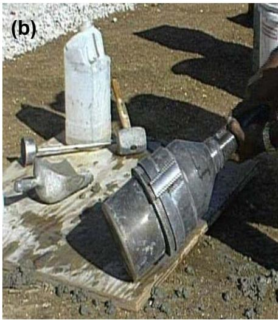
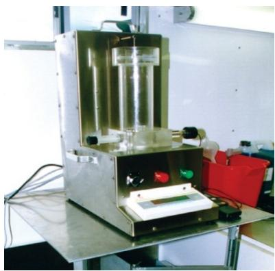
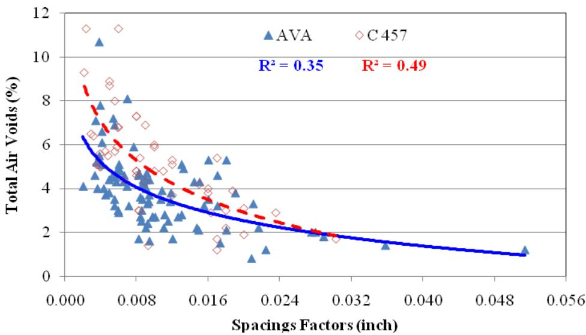
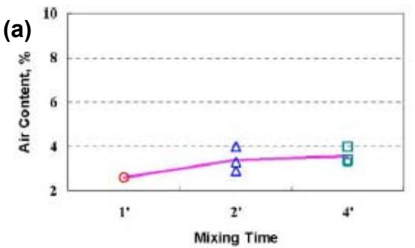
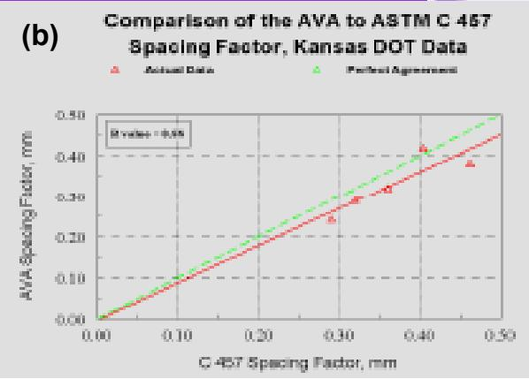
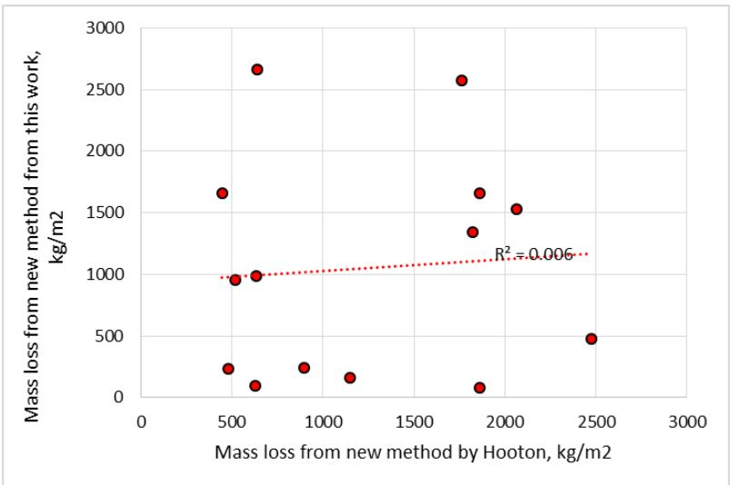

Air Void Analyzer
An air void analyzer is an automated instrument designed to quantify the total volume, size distribution, and spatial arrangement of entrapped or entrained air bubbles within fresh mortar or concrete samples. The device operates by suspending a representative sample in a viscous fluid medium that prevents bubble dispersion, allowing trapped air to rise through the column where changes in buoyancy are recorded over time [1] [4] [5]. Dedicated software processes these physical measurements to calculate critical microstructural parameters, including specific surface area and spacing factor, which represent the total void surface per unit volume and the average distance between adjacent bubbles [1] [6] [7]. By providing a comprehensive characterization of the air-void system beyond simple total air content, the analyzer serves as a vital quality-control tool for verifying that concrete possesses the necessary void structure to resist freeze-thaw damage [2] [4] [5].
Sources (9)
Key findings
- The Air Void Analyzer provided on-site measurements of total air, bubble size, and spacing factor that correlated closely with laboratory core tests (ASTM C457) and fell within prescribed durability limits [4].
- The Air Void Analyzer reliably quantified both the amount and spacing of entrained air, which are key factors for permeability and freeze-thaw performance [2].
- Most examined pavements had air-void systems that were inadequately spaced or unevenly distributed, leaving over three-quarters of the cores vulnerable to freeze-thaw damage [9].
- The Air Void Analyzer delivered a complete on-site measurement of the fresh-concrete air-void system in about half an hour and consistently produced spacing-factor values within prescribed durability limits [4].
- Sampling location did not produce significant differences in spacing factor or specific surface, allowing reliable pre-paver measurements that reflect the final void system [4].
- The Air Void Analyzer tended to give more conservative values than rapid-air hardened-air testing, providing an inherent safety margin [4].
- A strong linear relationship between small-void content and the Air Void Analyzer spacing factor supported using the spacing-factor metric rather than total air for quality control [5].
- The mixture type accounted for roughly three-quarters of the observed variation in air-void parameters, while operator influence was negligible [5].
Air Void Analyzer Performance And Application
An air void analyzer is an instrument designed to quantify the total amount, size distribution, and spacing of entrained air bubbles within fresh or hardened concrete mixtures [1] [2] [4] [5]. The device operates by suspending a sample in a viscous fluid where rising air bubbles generate measurable buoyancy changes that are processed to determine key parameters such as specific surface and spacing factor [1] [4] [5]. These calculated metrics provide a comprehensive assessment of the void system’s geometry, which is critical for ensuring freeze-thaw durability by verifying that air bubbles are sufficiently small and closely spaced to accommodate ice expansion [1] [6] [7].
The following figure illustrates the instrument used to perform these measurements.

Air Void Analyzer [4]The image displays a stainless steel Air Void Analyzer (AVA) unit situated on a mobile laboratory table. This instrument is designed to evaluate the air void system of fresh concrete accurately on the jobsite, including total volume of air, size of air voids, and distribution of air voids. By providing this information, quality control adjustments to concrete batching can be made in real time to improve the air void spacing and thus increase freeze-thaw durability.
Research problem — The destructive nature of current Air Void Analyzer testing prevents real-time quality control behind the paver, creating a gap in the ability to promptly adjust mix designs and mitigate air-void degradation during construction [2]. Significant variability and poor repeatability in Air Void Analyzer results undermine confidence in its use as a rapid quality-control tool, leading to inconsistent correlations with standard reference methods and unreliable assessments of freeze-thaw durability [5] [8]. Incompatibilities between admixtures and cementitious materials can degrade the air-void structure in ways that are not reliably captured by existing measurement protocols, necessitating clearer criteria for interpreting analyzer data to ensure long-term pavement performance [1] [9].
The following figure illustrates the statistical analysis of how ambient temperature, concrete water-to-cement ratio, and vibrator energy affect air void characteristics.
 Statistical analysis of the effects of ambient temperature, concrete water-to-cementitious ratio (w/cm), and vibrator energy on air void parameters. [5]
Statistical analysis of the effects of ambient temperature, concrete water-to-cementitious ratio (w/cm), and vibrator energy on air void parameters. [5]
The figure displays a matrix of plots comparing gravimetric air content against Air Void Analyzer (AVA) measurements for specific surface area (SF) and spacing factor (SS). It demonstrates that concrete w/c had little effect on the gravimetric air content, but it had noticeable effect on the AVA measurements. The data indicates that concrete a/c had much more significant effect on air-void spacing factor and specific surface measured by AVA compared to its effect on total air content.
State of the art — The Air Void Analyzer is widely established as a standard laboratory tool for quantifying total air content, spacing factor, and specific surface in fresh concrete to support mix design and durability assessment [1] [2] [3]. Despite its widespread adoption, the method faces challenges regarding standardization and variability, prompting ongoing research into equipment robustness, fluid viscosity control, and non-destructive field sensors for real-time monitoring [2] [5].
The following figure illustrates common devices used for measuring the air content in fresh concrete.

Devices for air content measurement of fresh concrete—(a) ASTM C231 and (b) ASTM C173 [5]The image displays a portable, cylindrical metal apparatus resting on a wooden board alongside various hand tools such as hammers. This device is identified in the caption as ASTM C173, which corresponds to the Air Void Analyzer (AVA) described in the source context.
Findings from the reports
- The Air Void Analyzer reliably quantifies the fresh-concrete air-void system, including total air volume, bubble size distribution, specific surface, and spacing factor, providing a complete profile in approximately thirty minutes [4].
- The device delivers on-site measurements that correlate closely with laboratory core tests using ASTM C457, outperforming conventional fresh-concrete methods that report only total air content [4].
- Sampling location relative to the paver and vibrator does not produce statistically significant differences in spacing factor or specific surface, allowing reliable pre-paver measurements that reflect the final void system [4].
- The analyzer reveals a strong inverse relationship between specific surface and spacing factor, where smaller bubbles produce higher specific surface values and lower spacing factors [4].
- Air-void systems in tested pavements were frequently inadequate, with over three-quarters of cores showing voids that were either inadequately spaced or unevenly distributed [9].
- In two-stage mixed concrete containing supplementary cementitious materials, the analyzer recorded a substantial reduction in total air content and an increase in spacing factor compared to conventional dry-batch mixes [6].
- The viscosity of the blue fluid used in AVA testing markedly influences results, with specific viscosity ranges yielding higher measured air content and lower spacing factors [5].
- Operator-related variance is negligible, indicating that measurement repeatability is not limited by the user but rather by mixture type and fluid properties [5].
- A spacing factor of 0.28 mm or lower consistently yielded freeze-thaw durable concrete, confirming the AVA-derived spacing-factor limit as a primary performance indicator [3].
- AVA spacing-factor results showed poor correlation with those obtained from hardened specimens using ASTM C457 in several studies, indicating variability between fresh and hardened state measurements [8].
Novelty & rigor — Research has shifted the air void analyzer from a destructive laboratory tool to a rugged, field-ready instrument capable of real-time assessment behind the paver, enabling immediate mix adjustments during construction [2]. Methodological innovations include replacing standard sampling with hand-packed syringes and magnetic stirring for controlled void release, as well as integrating automated image analysis to replace manual interpretation and accelerate data processing [1] [4]. The approach is distinguished by its systematic field validation and statistical calibration of fluid viscosity and spacing factor limits, which establishes the analyzer as a reliable process-control tool for predicting freeze-thaw durability in diverse concrete mixtures [5] [9].
The figure below illustrates the air void analyzer.

The Air-void analyzer (AVA) equipment. [5]The image displays a stainless steel instrument featuring a vertical cylindrical column and a control panel with red and green buttons, identified as the air-void analyzer. This equipment is used for measuring the air-void structure parameters in fresh concrete.
Reported values
| Parameter | Value | Context | Source |
|---|---|---|---|
| spacing factor | 1.03 mm | IP25 mix (exception to durability rule) | [3] |
| spacing factor | <= 0 . 2 8 mm | samples that are F-T durable | [3] |
| spacing factor limit | 0.28 mm or less mm | required when measured using AVA | [3] |
| total air content | 0.2% to 2.4% | concrete without AEA (air-entraining admixture) | [3] |
| total air content | 5.9% to 9.3% | I-FA-AEA mix | [3] |
| AVA spacing factor | 0.012 in. | corresponding to AVA total air content of 3%, C231 air content of 5%, and C457 spacing factor of 0.008 in. | [5] |
| AVA spacing factor acceptance criterion | 0.012 in. | for concrete to have AVA total air content of approximately 3% or C231 air content of 5% | [5] |
| AVA total air content | 2.3% | acceptable limit corresponding to 5% gravimetric or C231 air content | [5] |
| AVA total air content | 3.0% | acceptable limit corresponding to 5% gravimetric or C231 air content | [5] |
| spacing factor | 0.20 mm | benchmark for acceptable freeze-thaw durability (hardened concrete) | [7] |
| spacing factor | 0.2 mm | Mixtures 2 through 7 measured using ASTM C 457 | [8] |
| air system adequacy failure rate | 39% | cores based on bubble spacing factor | [9] |
| spacing factor | 0.005 in | minimum measured value | [9] |
| specific surface | 970 in²/in³ | maximum measured value | [9] |
| total air content | 9.0% | maximum measured value | [9] |
7 more distinct values omitted here; the full span-verified set is in the quantities sidecar.
The following figure illustrates the statistical relationship between AVA total air content and the spacing factor.

Statistical analysis—relationship between AVA total air and spacing factor [5]The figure displays a scatter plot comparing Total Air Voids (%) against Spacing Factors (inch) for two distinct datasets labeled AVA and C457. Trend lines indicate that as the spacing factor increases, the total air voids percentage decreases for both measurement methods. This relationship is used to establish an acceptance criterion where a specific AVA spacing factor corresponds to target total air content levels.
Across the reviewed reports, the Air Void Analyzer is established as a capable tool for quantifying fresh-concrete air-void parameters such as spacing factor and specific surface, with data indicating that smaller bubbles correlate strongly with improved freeze-thaw durability metrics. However, the device exhibits significant measurement variability and poor correlation with standard hardened-concrete tests like ASTM C457, leading to inconsistent pass/fail outcomes compared to conventional methods. Consequently, while the AVA provides rapid on-site feedback useful for process control, its results are frequently scattered and influenced by factors such as fluid viscosity or mixing method, necessitating cautious interpretation rather than strict acceptance thresholds. [3] [4] [5] [6] [8]
The following figure illustrates how variations in concrete materials influence these Air Void Analyzer measurements.

Effect of mixing time on air content and spacing factor measurements. [5]The figure plots the relationship between mixing duration and the resulting air content percentage, showing a trend where values increase as the sample is mixed for longer periods.
Implications — Agencies should mandate the Air Void Analyzer as a standard quality-control instrument for concrete paving to enable real-time monitoring and automatic mix adjustments that ensure climate-specific durability [2] [9]. Specifications must prioritize spacing factor limits over total air content because the analyzer captures the fine bubble population that governs freeze-thaw resistance and scaling performance [5] [8]. Practitioners should adjust mixing protocols for two-stage concrete by modifying air-entraining admixture timing or dosage to compensate for reduced air formation and ensure adequate void structure [6] [7].
The following figure illustrates the correlation between Air Void Analyzer measurements and other standard air-void testing methods.

Comparison of the AVA to ASTM C 457 Spacing Factor, Kansas DOT Data [5]The figure displays a scatter plot comparing the spacing factor measured by an Air Void Analyzer (AVA) against values obtained using the ASTM C 457 method. Data points representing actual measurements from Kansas DOT tests are plotted alongside a line of perfect agreement, demonstrating that the AVA results correlate closely with the standard reference method.
Limitations — The device is destructive and requires removing concrete from the finished slab, which prevents rapid field deployment or real-time monitoring without significant equipment modifications [2]. Measurements exhibit high variability and poor repeatability due to sensitivity to mix composition, ambient conditions, and operator effects, leading to unreliable results that often conflict with established standards [4] [5]. There is a weak correlation between the analyzer’s output and standard durability metrics such as spacing factor or pressure-based air content, limiting its ability to serve as a definitive acceptance metric without further validation [6] [8].
The figure below illustrates the comparison between data from a new test method conducted in two laboratories under standard curing conditions.

Comparison between data from new test method conducted in two labs for standard curing [8]The figure displays a scatter plot comparing mass loss measurements obtained by a new test method against those derived from the Hooton method.
Evidence: 9 reports (7 primary)
Related concepts
In this hierarchy
- Parent: Air-Void Analysis
- Sibling: RapidAir Test
- Sibling: Super Air Meter
Related by shared evidence
- Air Entraining Agent — shares 8 reports
- Air-Void Analysis — shares 8 reports
- Concrete Materials & Mixtures — shares 8 reports
- CP Tech Center Reports — shares 8 reports
- Cementitious Materials & Chemistry — shares 7 reports
- Fly Ash — shares 7 reports
- Freeze-Thaw Durability — shares 7 reports
- Hydration, Heat & Maturity — shares 7 reports
Similar topics
- Air-Void Analysis
- RapidAir Test
- Air Entraining Agent
- Freeze-Thaw Durability
- Super Air Meter
- Vp/Vvoid Ratio
- Air Permeability Test
- Quality Management-Concrete
References
- P. Tikalsky, V. Schaefer, K. Wang, B. Scheetz, T. Rupnow, A. St. Clair, M. Siddiqi, and S. Marquez, "Development of Performance Properties of Ternary Mixes, Phase 1," Center for Transportation Research and Education, Ames, IA, Rep. TPF-5(117), 2007. [Online]. Available: https://www.intrans.iastate.edu/research/completed/development-of-performance-properties-of-ternary-mixes-phase-1/
- D. Harrington, R. Rasmussen, D. Merritt, T. Cackler, and P. Taylor, "Long-Term Plan for Concrete Pavement Research and Technology—The Concrete Pavement Road Map (Second Generation): Volume II, Tracks (FHWA-HRT-11-070)," National Center for Concrete Pavement Technology, Iowa State University, Ames, IA, 2012. [Online]. Available: https://www.fhwa.dot.gov/publications/research/infrastructure/pavements/pccp/11070/11070.pdf
- K. Wang, G. Lomboy, and R. Steffes, "Investigation into Freezing-Thawing Durability of Low-Permeability Concrete with and without Air Entraining Agent," National Concrete Pavement Technology Center, Ames, IA, 2009. [Online]. Available: https://www.intrans.iastate.edu/wp-content/uploads/2018/03/low-permeability-concrete.pdf
- J. Grove, G. Fick, T. Rupnow, and F. Bektas, "Material and Construction Optimization for Prevention of Premature Pavement Distress in PCC Pavements," National Concrete Pavement Technology Center, Ames, IA, Rep. TPF-5(066), 2008. [Online]. Available: https://www.intrans.iastate.edu/wp-content/uploads/2018/03/mco-final.pdf
- K. Wang, M. Mohamed-Metwally, F. Bektas, and J. Grove, "Improving Variability and Precision of Air-Void Analyzer (AVA) Test Results ..., Phase I," Center for Transportation Research and Education, Ames, IA, 2008. [Online]. Available: https://www.cptechcenter.org/wp-content/uploads/2018/03/ava-1.pdf
- T. D. Rupnow, V. R. Schaefer, K. Wang, and B. L. Hermanson, "Improving PCC Mix Consistency and Production Rate through Two-Stage Mixing," Center for Transportation Research and Education, Ames, IA, Rep. TR-505, 2007. [Online]. Available: https://www.intrans.iastate.edu/wp-content/uploads/2018/03/two-stage-mix-1.pdf
- P. Taylor, P. Tikalsky, K. Wang, G. Fick, and X. Wang, "Development of Performance Properties of Ternary Mixtures: Field Demonstrations and Project Summary," National Concrete Pavement Technology Center, Ames, IA, Rep. TPF-5(117), 2012. [Online]. Available: https://www.intrans.iastate.edu/wp-content/uploads/2018/03/ternary_final_w_cvr.pdf
- P. Taylor and X. Wang, "Deicer Scaling Resistance of Concrete Mixtures Containing Slag Cement, Phase 3," National Concrete Pavement Technology Center, Ames, IA, Rep. TPF-5(100), 2014. [Online]. Available: https://www.intrans.iastate.edu/wp-content/uploads/2018/03/deicer_scaling_w_cvr.pdf
- J. Grove, F. Bektas, and H. Gieselman, "Southeast Michigan Local Road Concrete Pavement Durability Study," National Concrete Pavement Technology Center, Ames, IA, 2006. [Online]. Available: https://www.cptechcenter.org/wp-content/uploads/2018/03/mi_pavement_durability.pdf
Feedback on this page